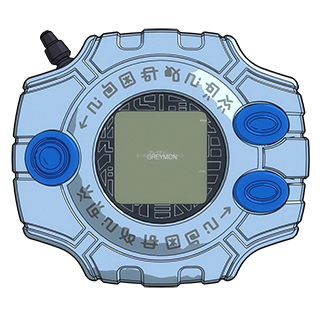

-


Botamon
- Nível: Bebe I
- Atributo : Nenhum
- Tipo : Slime
Um Digimon que nasceu recentemente. Na superfície do seu corpo em forma de lama, cresce um cotão negro espesso. Como acaba de nascer, é incapaz de lutar, mas pode criar objetos em forma de bolha da sua boca para intimidar os seus oponentes.
-
Koromon
- Nível: Bebe II
- Atributo : Data
- Tipo : Lesser
Um pequeno Digimon que perdeu a penugem que cobria a sua superfície, e cujo corpo ficou maior. Embora tenha se tornado capaz de se mover de forma mais ativa, ainda é incapaz de lutar. Ele pode criar bolhas com a boca para intimidar os seus inimigos
-

Agumon
- Nível: Treinamento
- Atributo : Vacina
- Tipo : réptil
Um Digimon Réptil com uma aparência semelhante a um pequeno dinossauro, que cresceu e tornou-se capaz de andar sobre duas patas. Sua força é fraca, pois ainda está em processo de crescimento, mas tem uma personalidade destemida e bastante feroz. Garras duras e afiadas crescem de suas mãos e pés, e seu poder é exibido na batalha.
-

Greymon
- Nível: Campeão
- Atributo : Vacina
- Tipo : Dinossauro
Um Digimon Dinossauro cuja pele craniana endureceu, de maneira a ficar coberta por uma carapaça parecida à de um besouro-rinoceronte. É um Digimon extremamente agressivo, com um corpo que é uma arma letal, repleta de garras afiadas e chifres gigantes. Contudo, é altamente inteligente e, se for domado, não deve haver monstro mais forte.
-

MetalGreymon
- Nível: Perfeito
- Atributo : Vacina
- Tipo : Dinossauro
Um Digimon Ciborgue que mecanizou mais de metade do seu corpo. Os MetalGreymons da Ilha File foram capazes de estender drasticamente as suas funções vitais através de uma remodelação, mas as partes orgânicas dos seus corpos não aguentaram e acabaram por descolorir.
-
WarGreymon
- Nível: Mega
- Atributo : Vacina
- Tipo : Homen Dragão
O guerreiro dragão mais forte, cujo corpo é revestido por uma armadura de super-metal "Chrome DigiZoid", é a forma final dos Digimons das Espécies Greymon. Embora a sua forma humana difira das gigantescas figuras dos Digimons das Espécies Greymon, melhorou grandemente a sua velocidade e poder, e é provavelmente impossível derrotá-lo com ataques de níveis Perfeito.
-
Omegamon
- Nível: Mega
- Atributo : Vacina
- Tipo : Homen Dragão
Um dos Cavaleiros Reais, que foi fundido a partir do Vírus entre WarGreymon e MetalGarurumon devido à vontade poderosa de todos os que lhe desejaram bem. É equipado com a "Grey Sword" e a "Brave Shield Omega" no seu braço esquerdo em forma de WarGreymon, e os "Garuru Cannon" e mísseis no seu braço direito em forma de MetalGarurumon.